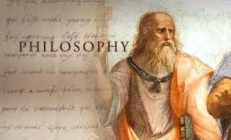

관심분야
- 철학
- 순수이성비판
- 공리주의
- 개인주의
- 책읽기
- 왜 칸트인가
- 니체의 인생수업
- 이방인
- 애니
- 사이버 펑크 엣지 러너
- 너의 이름은
- 지
안녕하세요 제이름은 조준영입니다. 올해 대학교 입학한 새내기 입니다.
다양한 관심분야와 취미미할동을 하고 있습니다. 즐거운 하루 되세요~
|  | ||
| 철학 | 책 읽기 | 애니 |
|---|
| 구분 | 월 | 화 | 수 | 목 | 금 |
|---|---|---|---|---|---|
| 09 | |||||
| 10 | 인터넷콘텐츠 (103/공학615) | 프로그래밍언어I (103/공학603) | |||
| 11 | |||||
| 12 | |||||
| 01 | |||||
| 02 | 컴퓨터과학개론 (103/공학507) | ||||
| 03 | SW개발문제해결능력 (103/공학609) | ||||
| 04 | 컴퓨팅 사고력 (103/공학608) | ||||
| 05 | |||||
| 06 |